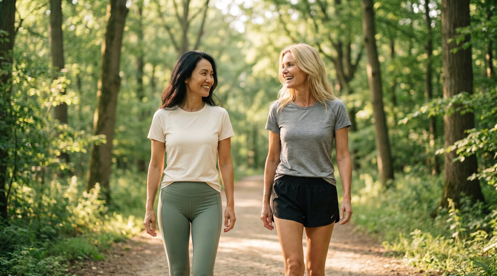
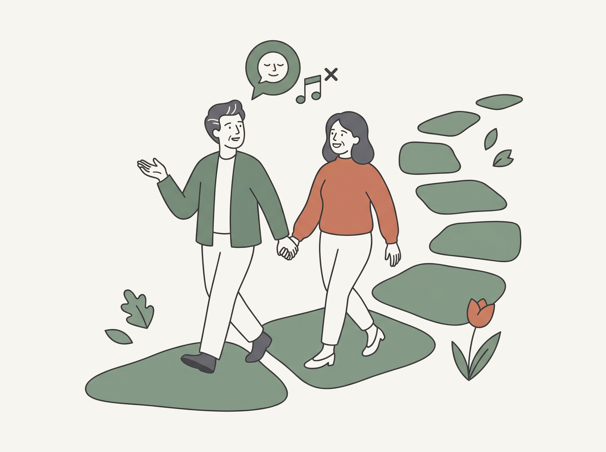
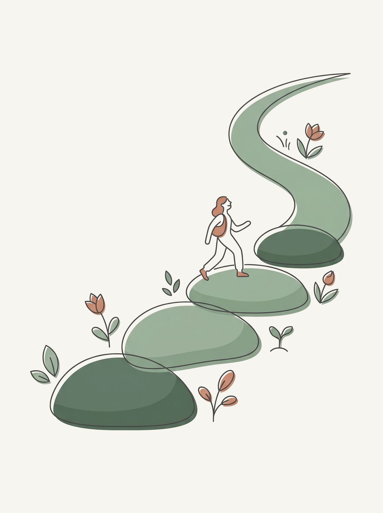
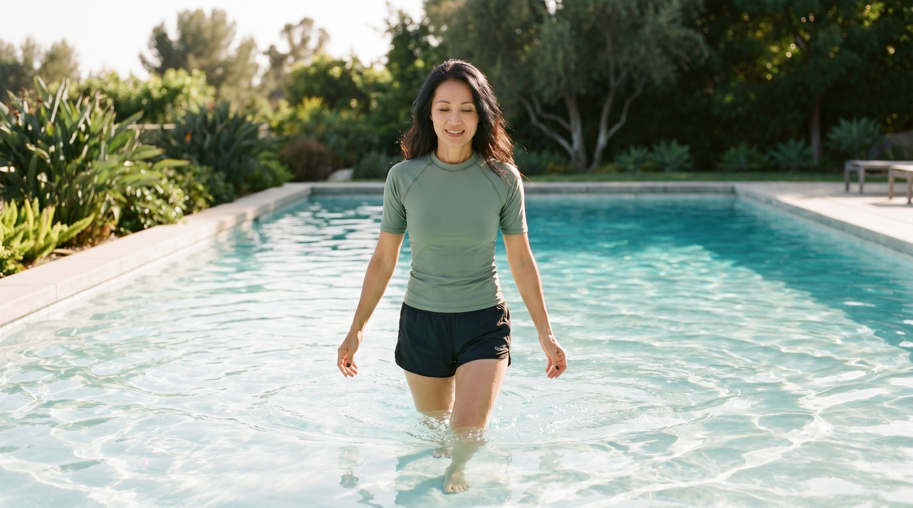
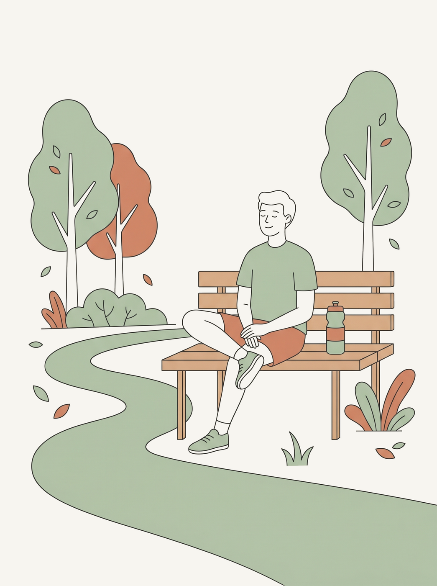
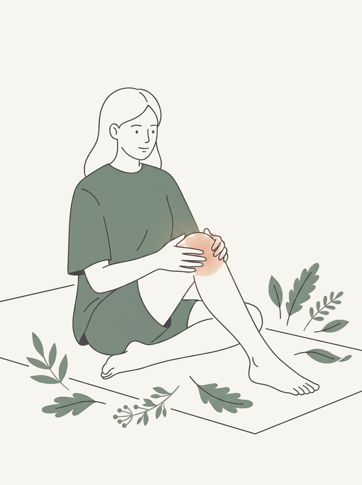

A simple, evidence based walking plan. Aerobic exercise is the most studied and top ranked movement for knee osteoarthritis.

Exercise is one of the most effective treatments we have for knee osteoarthritis. Across every major guideline it is the most strongly recommended first step, ahead of medication(1, 2), and its benefit lasts: in the largest reviews, the pain relief from exercise keeps working for two to six months after a program ends(3). Of all the ways to move, walking is the most studied and the top ranked.
Across the evidence, aerobic activity like walking is the top ranked exercise for knee OA. In a 2025 network meta-analysis of 217 trials, aerobic exercise had the highest probability of being the best treatment across pain, function, gait, and quality of life(4). A structured walking program reduced knee pain by 1.4 points on a 0 to 10 scale, compared with 0.1 in people who did not walk.
More broadly, the largest review to date (139 trials) found that exercise eases knee pain about as much as an oral anti inflammatory taken together with acetaminophen, the benefit keeps going for 2 to 6 months after a program ends, and low impact activity does not speed up joint damage on imaging(3). Walking is also the most accessible option, which is why the Arthritis Foundation built a program around it.

This is a gentle, doable build for someone who has not been active. If you already walk regularly, start around week 5. Stay at low to moderate effort the whole way.
Tick each stage as you finish it. Your progress saves on this device, so it is here when you come back.

| Weeks | Walking | Done |
|---|---|---|
| 1 to 2 | Walk 10 minutes, 3 days a week, on flat ground. | |
| 3 to 4 | Walk 15 to 20 minutes, 3 to 4 days a week. | |
| 5 to 6 | Walk 25 to 30 minutes, 4 days a week. Add modest hills if comfortable. | |
| 7 to 8 | 30 to 45 minutes, 4 days a week. Mix walking with cycling or the pool if available. |
Walking is the most studied, but any of these give the same kind of aerobic benefit with low joint load(4). Pick what you will actually keep doing:

Recreational running has not been shown to increase the risk of developing knee OA in healthy runners, so you do not need to stop. Use a load management approach: more rest days, and attention to surface, distance, speed, and footwear, alongside lower limb strength work. Stop the run if you get knee swelling that lasts more than 24 hours, or pain that worsens day over day.

In a 2026 trial, simple step goals and rewards added about 771 steps a day(6). Streaks and small targets are not gimmicks, they reliably increase activity in knee OA.

Flares happen. You do not have to stop moving. For a few days, cut your usual walking by about half and switch to the pool or a stationary bike, which carry the load for you. Ease back in: aim for about 50 percent of your routine, then 70 percent, then full, over roughly a week.
If none of these have moved by week 8, message Clara. We will look at next steps together, whether that is the compound cream, a medication review, or a physiotherapy referral.
Walking is the easiest first step in your plan, and one of the most powerful. Start where you are, keep it gentle and steady, and let the weeks add up.
This guide is for education and is not a substitute for your Clara doctor's advice. Your plan is personalized to you. Information here reflects your on file Clara knee OA evidence, drawn from AAOS, the American College of Rheumatology, OARSI, NICE, UpToDate, and recent Cochrane and BMJ reviews.